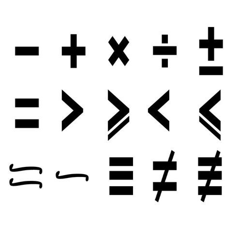

I’m not the best at python, but it is undeniably one of the better languages for handling math and numbers. This was why I decided it was a good idea to both try to learn a little bit of python, and get my math homework done a little faster
This math class was infamous for its tediousness, with a lot of things that anyone could easily do in their heads. What was I supposed to do, simply sit there, watch everybody else cheat, and work hard at my own learning? Absolutely not! I absolutely had to speed up the process! I’m not much of a cheater myself, but I figured that the most legitimate way to speed up the problems would be to automate them, and if I made the calculator myself, then there’s no problem!
It was perfectly moral with no implications at all.
The situation was very similar, there were many problems, all of them things I needed to calculate, but things that would be annoying to calculate for myself. I looked online, it wasn’t like doing the math was the homework, it was a physics class, I just needed the calculations to prove something. Bam! My plans were ruined, there were no online calculators! What could I do? How could I save myself from this situation of complete despair and tediousness? Wait, what if I just code my own calculator, and make it as generic as I possibly can, that could fix all of my current problems, and even some I may have in the future! That was my thought process for the duration of my first physics lab class at college, the calculator saved me a lot of time, but unortunately had to go down in flames, along with the computer I made it on. Rest In Piece, Beloved self-made calculator.